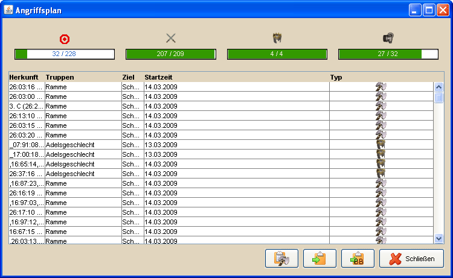

Angriffsplaner - Ergebnisse |
||
|  | ||
Wurden alle Einstellungen vorgenommen erhält man nach einem Klick auf Berechnen eine Liste der möglichen Angriffe. Der zweite Wert gibt an, wieviele von den Dörfern verplant wurden, die anfangs unter Herkunftsdörfer angegeben wurden. Im Beispiel konnte für 2 Dörfer kein passendes Ziel gefunden werden. Der dritte Wert zeigt das Verhältnis zwischen geplanten und möglichen Adelungen. Der Wert für die möglichen Adelungen errechnet sich dabei aus der Anzahl der zu verwendenden AGs geteilt durch 4. Als mögliche Adelung wird gezählt, wenn für ein Dorf die in den Einstellungen angegebene Anzahl von Clean-Offs erreicht und 4 AGs zugewiesen werden konnten. Ob und wie nach Adelungen gesucht wird hängt vom Algorithmus ab, den man ebenfalls in den Eintellungen festlegen kann. Der letzte Wert gibt an, auf wieviele Ziele (siehe Wert 1) die maximale Anzahl an Angriffen läuft. Der Wert für die maximale Anzahl von Angriffen konnte vorher in den Einstellungen festgelegt werden. Nachfolgend findet man die Liste der errechneten Angriffe. Diese kann man in einen Angriffsplan in der Angriffsübersicht einfügen oder auf verschiedene Arten in die Zwischenablage kopieren. |
||